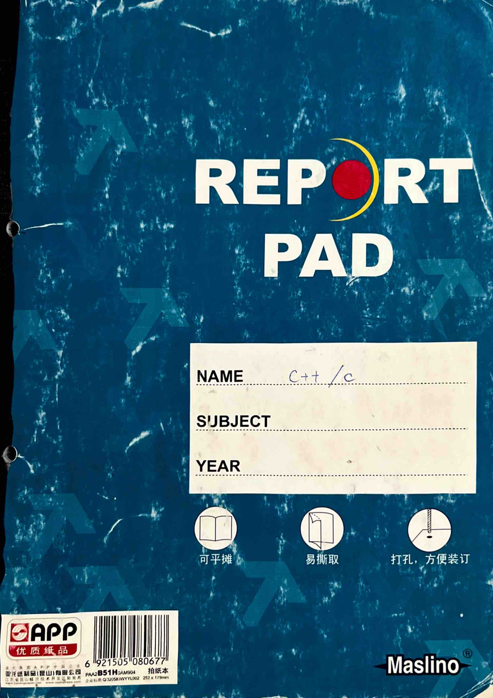

REPORT PAD
NAME: C++ / C
SUBJECT:
YEAR:
可平摊 易撕取 打孔，方便装订
Maslino

Name: Liu Ming Address: Fendou Tel: Fendou Nationality: Fendou Constellation: Blood type: Birth Date: I.D. Card: Company/school Name: Company/school Tel: Company/school Web: Company/school Fax: E-mail: QQ: MSN: Other: 轻轻松松做笔记 节约每寸纸
### Notes on Binary, Octal, and Hexadecimal Number Systems
#### 1. Binary to Decimal Conversion Each digit is multiplied by 2 raised to the power of its position, where the position is the index of the digit in the number.
#### 2. Decimal to Binary Conversion - **Integer Part**: Use the division-by-2 method (exact). - **Fractional Part**: Use the multiplication-by-2 method (fixed precision).
#### 3. Hexadecimal to Decimal Conversion Each digit is multiplied by 16 raised to the power of its position, where the position is the index of the digit in the number.
#### 4. Decimal to Hexadecimal Conversion - **Integer Part**: Use the division-by-16 method (exact). - **Fractional Part**: Use the multiplication-by-16 method (fixed precision).
#### 5. Hexadecimal and Octal to Binary Conversion - **Binary Conversion**: Each hexadecimal or octal digit is converted to its 4-bit or 3-bit binary equivalent. - **Note**: When converting between hexadecimal and binary, use the decimal point as the center and expand to the right and left by 4 bits or 3 bits respectively. Fill any insufficient units with 0s.
### Binary Arithmetic and Logical Operations
1. Addition: - $0 + 0 = 0$ - $0 + 1 = 1 + 0 = 1$ - $1 + 1 = 10$ (carry 1 to the next higher bit)
2. Subtraction: - $0 - 0 = 1 - 1 = 0$ - $1 - 0 = 1$ - $0 - 1 = 1$ (borrow 1 from the next higher bit)
3. Multiplication: - $0 \times 0 = 0$ - $0 \times 1 = 1 \times 0 = 0$ - $1 \times 1 = 1$
4. Division: - Can be performed using long division, utilizing multiplication and subtraction operations.
5. OR (Logical OR): - $0 \vee 0 = 0$ - $0 \vee 1 = 1 \vee 0 = 1 \vee 1 = 1$ - ... (parallel, series)
6. AND (Logical AND): - $1 \wedge 1 = 1$ - $0 \wedge 1 = 1 \wedge 0 = 0 \wedge 0 = 0$ - ... (series, parallel)
7. NOT (Logical NOT): - $\overline{1} = 0$ - $\overline{0} = 1$ - ... (complement)
8. XOR (Exclusive OR): - $0 \oplus 0 = 1 \oplus 1 = 0$ - $0 \oplus 1 = 1 \oplus 0 = 1$
### Representation of Numbers in Computers - Fixed Point and Floating Point
1. Fixed Point: - **Integer: Fixed Point Integer** (the highest binary digit is the sign bit, 0 for positive, 1 for negative) - **Fraction: Fixed Point Fraction** (typically has 8 k bits, k ∈ Z = k bytes = 2k hexadecimal digits) - Due to the fixed point fraction, the default sign is in the sign bit, not in the binary digit, thus fixed point integers and fractions in binary fixed point representation are the same. At this time, it should be determined whether it is an integer. - **Original Code**: The above fixed point number representation method, sign bit + number, cannot be directly used for calculation (same sign bit). - Using n binary digits to store the original code, it can represent ±(2^0 + 2^1 + ... + 2^(n-1)) = ±(2^n - 1) within the range of integers. - **Complement**: The complement of a positive number is the same as the original code. - The complement of a negative number is the original code except for the sign bit. The complement code is used in the two's complement system.
The note discusses the representation of numbers in binary and their encoding in computers. It covers:
1. **Sign-Magnitude Representation**: - Positive numbers: Sign bit = 0, Magnitude = Original code. - Negative numbers: Sign bit = 1, Magnitude = Original code + 1.
2. **Two's Complement Representation**: - Positive numbers: Same as sign-magnitude. - Negative numbers: Sign bit = 1, Magnitude = Original code + 1. - The range of numbers that can be represented is from +2^(n-1) to -2^(n-1).
3. **Floating Point Representation**: - A number is represented as P = S × 2^N, where S is the significand (or mantissa) and N is the exponent. - The significand can be in sign-magnitude or two's complement form. - The exponent N can be in sign-magnitude or two's complement form. - The range of exponents is from -2^(n-1) to 2^(n-1) - 1.
4. **Binary Fractional Representation**: - The binary point is fixed at a certain position. - The significand can be in sign-magnitude or two's complement form. - The exponent can be in sign-magnitude or two's complement form. - The range of exponents is from -2^(n-1) to 2^(n-1) - 1.
### Basic Data Types and Constants:
**Constants:** Values that do not change during program execution. Represented in various forms.
**Compilation:** The compiler identifies the type of a constant based on its representation. Different data types occupy different numbers of bytes in memory (char: 1B; int: 4B; float: 8B).
#### 1. Integer Constants
**1.1. Signed Integer Constants:** - **2B (16-bit):** Range: -2^15 to 2^15 - 1 - **2B (16-bit):** Range: -2^15 to 2^15 - 1 - **4B (32-bit):** Range: -2^31 to 2^31 - 1
**Input to Computer:** 1. **Decimal:** 0-9, + or - (positive integers can be written without a + sign). 2. **Hexadecimal:** 0-9, a-f (with 0x prefix). 3. **Octal:** 0-7 (with 0 prefix). The sign is contained in the corresponding hexadecimal or octal number. Adding +(-) to a hexadecimal or octal number does not indicate a positive or negative number; thus, hexadecimal and octal are generally used for unsigned integer constants.
#### 2. Floating Point (Real) Constants
1. **Decimal:** 0-9, + or - and decimal point (must be present). 2. **Scientific Notation:** A.eB, where A is an integer and can be positive or negative. A can be a decimal number. The format is p = s * 2^n. Here, s is the mantissa and n is the exponent.
Example: Decimal floating-point number 97.6875
$$(97.6875)_{10} = (1100001.1011)_2$$
$$= (0.11000011011)_2 \times 2^7$$
63 62 52 51 0
Tail number's sign bit - exponent N-2 biased code. 52 bits: tail number's original code after the 52 bits.
Note: 1. The tail number's sign bit is in the first bit of the 64 bits (63rd bit).
2. The tail number's original code after the sign bit is always "1" (any number can be normalized), so we can omit this bit and add it back during calculation.
3. The exponent is converted to binary original code, then subtracted by (10), i.e., (2). The resulting 11 bits are then biased.
4. A floating-point constant can be accurately represented to 13 decimal places (excluding the first digit), but there is still a rounding error.
3. Character constants:
A single character enclosed in single quotes (single quotes) or preceded by an escape character (backslash) is a character constant, such as 'a', '*', '\n', '\x'.
A character constant is stored in 1 byte (8 bits), storing the ASCII code value of the character (2^8 types).
Example: '6' is an integer constant, occupying 2 bytes, in the computer it is (110)2 = 0000 0000 0000 0110.
'6L' is a long integer constant, occupying 4 bytes, in the computer it is (0...0 0110).
'0.6e1' is a floating-point constant, occupying 8 bytes, in the computer it is (0...1 10...0 110...0).
'6' is a digit character, occupying 1 byte, in the computer it is the ASCII code value 54 = (110110)2.
C language data types: integer, real, character, enumeration, structure, pointer. Basic data types.
### Variables Variables: values that can change during program execution, corresponding to a specific memory location in the computer. Different variables occupy different numbers of bytes. When declaring a variable, specify its data type (variable name) to allow the system to allocate the appropriate number of bytes. (Different compilers may allocate different numbers of bytes for the same type of variable.) Variable names: start with a letter (case-sensitive) or an underscore, followed by letters, numbers, or underscores. In general, variable names should not exceed 8 characters; otherwise, they will not be recognized.
#### 1. Integer Variables - Short integer 2B: `short` or `short int` (signed) -> range: -2^15 ~ 2^15 - 1 (signed) - `unsigned short` or `unsigned short int` -> unsigned -> range: 0 ~ 2^16 - 1 - Basic integer 2B: `int` -> signed -> range: -2^15 ~ 2^15 - 1 - `unsigned int` or `unsigned` -> unsigned -> range: 0 ~ 2^16 - 1 - Long integer 4B: `long` or `long int` -> signed -> range: -2^31 ~ 2^31 - 1 - `unsigned long` or `unsigned long int` -> unsigned -> range: 0 ~ 2^32 - 1
### Notes: 1. A type declaration statement can define multiple variables, with variables separated by commas. 2. Variables can be initialized (assigned values) when declared, and their values can be changed later in the program. 3. For integer variables, if no input data is provided, the system will use the default value (which is the value of the highest bit). 4. The highest bit is filled with the value of the number.
2. Real Variables - Single Precision: 6-7 significant digits - Double Precision: 15-16 significant digits - float 4B - double 8B
3. Character Variables char ~ 1B ~ ASCII code ~ integer constant (8 bits: 1B)
%C: Output character data format specifier %d: Output basic integer data format specifier In C, character data (ASCII code) and integers (1B: 0~2^8-1) are not interchangeable. (0~126) ↔ (0~255) → (0~126)
6. Data Input and Output - Input/Output Devices: Keyboard/Display - Input/Output Data Formats: Integer, Real, Character - Input/Output Specific Content
- Using "stdio.h" library input/output printf("%格式...", content) format output scanf("%格式..." & address) format input putchar(...) character output getchar(...) character input
1. Format Output Functions 2B 4B %lu - Decimal: %d (basic), %ld (long), %lu (unsigned long) - Octal: %o (basic), %lo (long), %uo (unsigned long) - Hexadecimal: %x (basic), %lx (long), %ux (unsigned long) - After the percent sign, you can add + (right alignment), - (left alignment), m (total width).
After the percent sign, you can add + (right alignment), - (left alignment), m (total width).
2. Real type format specifier: - Single precision 4B: %f or %e - Double precision 8B: %lf
3) Character type format specifier: - 1B: - %c
Note: 1. Except for %, d, f, c, s (string), l--以外, other double quotes in the string are output as is. 2. First calculate the value of each item (constant/variable/expression), then store them in the output buffer according to their byte size. According to the format specifier, retrieve data from the output buffer. If it's not a format specifier, output the original character. 3. When storing integers (two's complement), real numbers (IEEE floating-point), and characters (ASCII), the low-order byte part of the data (from right to left 1B old number) is stored at the end of the storage space. The high-order byte part is stored at the beginning. 4. When converting long to int, only the first 2B (from right to left) is stored in the storage space. (The order is reversed in the two's complement form)
2. Format input function: 1) Integer: Same as output 2) Real type: - Single precision 4B: %f or %e - Double precision 8B: %lf
Note: Cannot use m.n to represent the number of digits.
3) Character type: %c, %mc.
Note: ① The items in the address table are variable addresses, separated by commas. For example, &a, &b, &c. ② The format specifier does not contain other characters. When inputting data, two data items are separated by a space, a tab, or a newline. If there are other characters, input them first, then the data. ③ A character variable can only store one character. The first character is assigned to char (%mc). ④ Do not use m.n to specify the width after the decimal point.
⑤ When a C program starts executing, the system allocates an input buffer in memory to store data entered from the keyboard. When a scanf() is encountered, it checks if there is data in the input buffer.
If there is (remaining data from the previous scanf()), it retrieves the format specifier from the format string and converts it to ASCII code, storing it in the corresponding address in the memory address table (from high to low).
Else if there is no input buffer, wait for the user to input data from the keyboard and press
3. Character output function Outputs the character c at the current cursor position. putchar(c) c = character constant / character variable / integer variable / integer expression / character literal (add a left single quote) (converted to ASCII code).
4. Character input function Receives a character from the keyboard. char x; x = getchar();
char x; scanf("%c", &x);
char x; scanf("%c", &x);
A getchar() only sequentially receives a character from the input buffer, leaving the rest for the next use. It ends with
### Chapter 7: Expressions - Operators - Expressions
1. **Assignment Operator "=".** - **Syntax:** - `left_value (variable) = expression` - `left_value (variable) = expression;` - **Function:** Calculates the value of the right expression and assigns it to the left side, executing from right to left. - **Note:** - If the data types on both sides of `=` are inconsistent, the system automatically converts types. - Allows other operators before `=` to form compound assignment operators. - Examples: - `+=`, `-=`, `*=`, `/=`, `%=`. - `x = x / 2` is equivalent to `x /= 2`.
2. **Arithmetic Operators.** - **Addition:** `+` (double: addition; single: increment) - **Subtraction:** `-` (double: subtraction; single: decrement) - **Multiplication:** `*` (double: multiplication) - **Division:** `/` (double: division; integer division, truncating towards zero) - **Modulo:** `%` (double: modulo, only used for integer division) - **Arithmetic Expression:** An expression formed by connecting operands with arithmetic operators. - **Note:** - When different data types are mixed in arithmetic operations, the system automatically converts types during the operation. - Conversion order: (low) `int -> unsigned -> long -> double` (C's all real types) - `char` (based on ASCII value operation) or `short` `float`.
3. **Type Conversion:** - `(type_name)(expression)`. - Examples: - `(int)(x - y)`, converting the result of `x - y` to `int`. - `(double)x / y`, converting `x` to `double`.
4. **Relational Operators.** - `<` (less than), `<=` (less than or equal to), `>` (greater than), `>=` (greater than or equal to).
== equals != not equal
Explanation: The value of a relational expression is 1 (condition satisfied, statement is true) or 0 (condition not satisfied, statement is false).
4. Logical operations (operations on true and false values, true is 1, false is 0, also a general decimal number) && and || or ! not
!false && false = false, !false && !false = 1, false && false = false !false || false = 1, !false || !false = 1, false || false = false !false = false, !false = 1
Explanation: The order of operations (left to right).
! -> arithmetic operations -> relational operations -> && and || -> logical operations:
5. Increment and decrement operations
Function: x = ++n => n = n + 1; x = n; x = n++; => x = n; n = n + 1;
Explanation: ++ and -- can only be used with int or char (ASCII values), not with constants or expressions.
6. sizeof operation
Function: Calculates the number of bytes occupied by a variable of a certain type in the expression. sizeof(expression), sizeof(type)
Explanation: The sizeof operation can appear in expressions.
e.g. #include
7. Comma Operator (Sequential Evaluation Operator)
Function: `,` as a separator; as a sequential evaluation operator.
As a separator: eg1: A variable declaration statement can define multiple variables at the same time, with commas as separators. eg2: In `printf()`, parameters are separated by commas.
As a sequential operator: Sub-expression 1, sub-expression 2, ..., sub-expression n. Evaluate each sub-expression from left to right, calculating the value of each sub-expression (variables can be the same, but the value of the variable changes as it is passed to the next sub-expression, thus affecting the value of the next sub-expression). This is the value of the comma expression.
Note: `,` is the lowest-level operator (last operation).
Example:
```c
#include
8. Conditional Operator (Ternary Operator or Ternary Operator).
Expression1 ? Expression2 : Expression3.
Function: If the value of Expression1 is non-zero (true), take the value of Expression2; if zero (false), take the value of Expression3.
Note: 1) Operator precedence: unary > binary > ternary > ... 2) The conditional operator has a right-to-left associativity (assignment operators are also right-to-left).
Example: a > b ? a : c > d ? c : d $$ a > b ? a : (c > d ? c : d) $$
**Chapter Eight: Preprocessing**
1. **Macros (Macro) Definition**
1) **Symbolic Constants**
Function: To reduce the amount of repeated writing of certain characters in the program, define this character string as a symbolic constant. $$\text{#define Symbolic Constant Name Character String}$$ (usually uppercase) (no semicolon at the end, each line alone) Its scope is until the appearance of "#undef Symbolic Constant Name".
Example: $$\text{#define PI 3.14159}$$ main() { ... } $$\text{#undef PI}$$
2) **Macros with Parameters**
Function: $$\text{#define Macro Name (Parameter List) Character String (with parameters)}$$ Note: To ensure that the calculation does not produce errors due to the order of operations. $$\{$$ $$\text{括号括起来}$$ $$\{$$ $$\text{括号括起来}$$ $$\}$$ $$\}$$
2. **File Include Command**
File Include: A source file (.c) can include another source file.
$$\text{#include
3. Conditional Compilation Commands:
Function: Compiles part of the source code in the C program only when certain conditions are met. Or, compiles part of the code when a certain condition is met. If the condition is not met, it compiles another part of the code. The goal is to generate different object files (.obj) from the same source code under different compilation conditions.
1) `#ifdef` directive: - Program segment 1 (no curly braces) - `#else` - Program segment 2 (no curly braces) - `#endif` - If the identifier is defined, it compiles program 1; otherwise, it compiles program 2.
2) `#ifndef` directive: - Program segment 1 - `#else` - Program segment 2 - `#endif` - If the identifier is not defined, it compiles program 1; otherwise, it compiles program 2. (The opposite of `#ifdef`)
3) `#if` constant expression: - Program segment 1 - `#else` - Program segment 2 - `#endif` - Any constant expression can be evaluated to a value of true (non-zero), in which case program 1 is compiled; otherwise, program 2 is compiled.
**Section 1: Statements**
1. **Statement Types:** - **Expression Statement:** Example: `y = x * x + 3;` or `c = getchar();` - **Empty Statement:** Only a semicolon. - **Control Statements:** `break;` `continue;` ... - **Function Return Statement:** `return;`
2. **Compound Statements:** - **Structure:** `{Statement; Statement; ...}` - **Examples:** Variable type declaration, a series of statements executed.
**Explanation:** 1. A compound statement is syntactically equivalent to an independent statement. 2. A compound statement can be placed inside another compound statement. 3. The "statement" within a compound statement only applies to the part of the compound statement following it (including inner compound statements). It does not affect the outer part. If the variable "x" is not declared within the compound statement (already declared in the outer layer), its value can be passed to the outer layer (and similarly to the inner layer). The inner layer can be considered an empty statement in the outer layer.
### Ten. Selection Structure
1. Single Branch Selection Structure
$$ \begin{array}{|c|c|} \hline \text{Expression} & \text{Statement} \\ \hline \text{if (Expression) Statement;} & \text{Statement} \\ \hline \text{Function: If the expression value is non-zero (true), execute the statement after the expression, then execute the statement after the if. If the expression value is zero, execute the statement after the if.} \\ \hline \end{array} $$
2. Two Branch Selection Structure
$$ \begin{array}{|c|c|} \hline \text{Expression} & \text{Statement1} \\ \hline \text{if (Expression) Statement1;} & \text{Statement2} \\ \hline \text{else Statement2;} & \text{else means (Expression)} \\ \hline \text{Function: Clearly!} & \text{if (Expression) Statement1; else; } \leftrightarrow \text{if (Expression) Statement1;} \\ \hline \text{Note: These are all legal forms.} & \text{if (Expression1) Statement1; else Statement2;} \leftrightarrow \text{if (Expression1) Statement1;} \\ \hline \text{if (Expression2) Statement2;} & \text{if (Expression1) Statement1; else; } \leftrightarrow \text{if (Expression1) Statement1;} \\ \hline \end{array} $$
3. Multi-Branch Selection Structure
1. if (Expression1) Statement1; if (Expression2) Statement2; ... ... ... ... ... ... ... ... ... ... ... ... ... ... ... ... ... ... ... ... ... ... ... ... ... ... ... ... ... ... ... ... ... ... ... ... ... ... ... ... ... ... ... ... ... ... ... ... ... ... ... ... ... ... ... ... ... ... ... ... ... ... ... ... ... ... ... ... ... ... ... ... ... ... ... ... ... ... ... ... ... ... ... ... ... ... ... ... ... ... ... ... ... ... ... ... ... ... ... ... ... ... ... ... ... ... ... ... ... ... ... ... ... ... ... ... ... ... ... ... ... ... ... ... ... ... ... ... ... ... ... ... ... ... ... ... ... ... ... ... ... ... ... ... ... ... ... ... ... ... ... ... ... ... ... ... ... ... ... ... ... ... ... ... ... ... ... ... ... ... ... ... ... ... ... ... ... ... ... ... ... ... ... ... ... ... ... ... ... ... ... ... ... ... ... ... ... ... ... ... ... ... ... ... ... ... ... ... ... ... ... ... ... ... ... ... ... ... ... ... ... ... ... ... ... ... ... ... ... ... ... ... ... ... ... ... ... ... ... ... ... ... ... ... ... ... ... ... ... ... ... ... ... ... ... ... ... ... ... ... ... ... ... ... ... ... ... ... ... ... ... ... ... ... ... ... ... ... ... ... ... ... ... ... ... ... ... ... ... ... ... ... ... ... ... ... ... ... ... ... ... ... ... ... ... ... ... ... ... ... ... ... ... ... ... ... ... ... ... ... ... ... ... ... ... ... ... ... ... ... ... ... ... ... ... ... ... ... ... ... ... ... ... ... ... ... ... ... ... ... ... ... ... ... ... ... ... ... ... ... ... ... ... ... ... ... ... ... ... ... ... ... ... ... ... ... ... ... ... ... ... ... ... ... ... ... ... ... ... ... ... ... ... ... ... ... ... ... ... ... ... ... ... ... ... ... ... ... ... ... ... ... ... ... ... ... ... ... ... ... ... ... ... ... ... ... ... ... ... ... ... ... ... ... ... ... ... ... ... ... ... ... ... ... ... ... ... ... ... ... ... ... ... ... ... ... ... ... ... ... ... ... ... ... ... ... ... ... ... ... ... ... ... ... ... ... ... ... ... ... ... ... ... ... ... ... ... ... ... ... ... ... ... ... ... ... ... ... ... ... ... ... ... ... ... ... ... ... ... ... ... ... ... ... ... ... ... ... ... ... ... ... ... ... ... ... ... ... ... ... ... ... ... ... ... ... ... ... ... ... ... ... ... ... ... ... ... ... ... ... ... ... ... ... ... ... ... ... ... ... ... ... ... ... ... ... ... ... ... ... ... ... ... ... ... ... ... ... ... ... ... ... ... ... ... ... ... ... ... ... ... ... ... ... ... ... ... ... ... ... ... ... ... ... ... ... ... ... ... ... ... ... ... ... ... ... ... ... ... ... ... ... ... ... ... ... ... ... ... ... ... ... ... ... ... ... ... ... ... ... ... ... ... ... ... ... ... ... ... ... ... ... ... ... ... ... ... ... ... ... ... ... ... ... ... ... ... ... ... ... ... ... ... ... ... ... ... ... ... ... ... ... ... ... ... ... ... ... ... ... ... ... ... ... ... ... ... ... ... ... ... ... ... ... ... ... ... ... ... ... ... ... ... ... ... ... ... ... ... ... ... ... ... ... ... ... ... ... ... ... ... ... ... ... ... ... ... ... ... ... ... ... ... ... ... ... ... ... ... ... ... ... ... ... ... ... ... ... ... ... ... ... ... ... ... ... ... ... ... ... ... ... ... ... ... ... ... ... ... ... ... ... ... ... ... ... ... ... ... ... ... ... ... ... ... ... ... ... ... ... ... ... ... ... ... ... ... ... ... ... ... ... ... ... ... ... ... ... ... ... ... ... ... ... ... ... ... ... ... ... ... ... ... ... ... ... ... ... ... ... ... ... ... ... ... ... ... ... ... ... ... ... ... ... ... ... ... ... ... ... ... ... ... ... ... ... ... ... ... ... ... ... ... ... ... ... ... ... ... ... ... ... ... ... ... ... ... ... ... ... ... ... ... ... ... ... ... ... ... ... ... ... ... ... ... ... ... ... ... ... ... ... ... ... ... ... ... ... ... ... ... ... ... ... ... ... ... ... ... ... ... ... ... ... ... ... ... ... ... ... ... ... ... ... ... ... ... ... ... ... ... ... ... ... ... ... ... ... ... ... ... ... ... ... ... ... ... ... ... ... ... ... ... ... ... ... ... ... ... ... ... ... ... ... ... ... ... ... ... ... ... ... ... ... ... ... ... ... ... ... ... ... ... ... ... ... ... ... ... ... ... ... ... ... ... ... ... ... ... ... ... ... ... ... ... ... ... ... ... ... ... ... ... ... ... ... ... ... ... ... ... ... ... ... ... ... ... ... ... ... ... ... ... ... ... ... ... ... ... ... ... ... ... ... ... ... ... ... ... ... ... ... ... ... ... ... ... ... ... ... ... ... ... ... ... ... ... ... ... ... ... ... ... ... ... ... ... ... ... ... ... ... ... ... ... ... ... ... ... ... ... ... ... ... ... ... ... ... ... ... ... ... ... ... ... ... ... ... ... ... ... ... ...
3) switch (expression) { case constant expression1: statement1; case constant expression2: statement2; ... case constant expressionn: statementn; default: statementn+1; }
Explanation: 1. Statements can be compound statements. 2. If you want to exit the switch structure after executing statement i, add break after statement i; otherwise, after executing statement i, the system will enter the execution of "case constant expressionn". Multiple cases can share a group of statements. After each case statement, generally add break, except for statements after case i+1. 3. If you do not add default, when the expression value does not match any case constant expression, it will exit the switch. 4. The values in case i should not be the same (e.g., constant expression i -> statement i). Each value must be unique and non-overlapping (only int or char).
4) Algorithm Example: Quadratic Equation Solution
1. Natural Language Description: Solve the quadratic equation Ax^2 + Bx + C = 0. First, input A, B, C. 2. If A = 0 -> Bx + C = 0. If B = 0, the equation has no solution, output "ERR". 3. If A ≠ 0 and B ≠ 0, the equation has two real roots x = -C/B. 4. If A ≠ 0 and B = 0, the equation has one real root x = -C/A.
NA Date
$$\begin{cases} C=0, & x_1=0, x_2=-\frac{B}{A} \text{ and real roots} \\ C\neq 0, & D=B^2-4AC. \begin{cases} D\geq 0, & x_1=\frac{-B-\text{sgn}(B)\sqrt{D}}{2A}, x_2=\frac{C}{A x_1} \\ D<0, & x_{1,2}=\frac{-B\pm\sqrt{-D}}{2A} \text{ complex conjugate roots} \end{cases} \end{cases}$$
② Flowchart Input A B C - A=0? - Yes: Output ERR - No: B=0? - Yes: x1=-C/B, x2=0 - No: C=0? - Yes: D=B^2-4AC - No: D≥0? - Yes: x1=-B-sgn(B)√D/2A, x2=-C/AX1 - No: x1=-B+√D/2A, x2=-B-√D/2A - Output x1, x2
③ Source Code
```c
#include
\begin{align*} \text{else} \\ \{ \text{if} (C == 0) \\ \{ x_1 = 0; x_2 = -B/A; \} \\ \text{else} \\ \{ D = B*B - 4*A*C; \\ \text{if} (D >= 0) \{ \\ \text{if} (B >= 0) x_1 = (-B - \sqrt{D}) / (2*A); \\ \text{else} x_1 = (-B + \sqrt{D}) / (2*A); \\ x_2 = C / (A * x_1); \\ \} \\ \text{else} \{ \text{printf}("x_1 = -\frac{-B + \sqrt{D}}{2*A}, B, D, A); \\ \text{printf}("x_2 = -\frac{-B - \sqrt{D}}{2*A}, B, D, A); \\ \} \\ \text{printf}("x_1 = %f \n x_2 = %f", x_1, x_2); \\ \} \end{align*}
\textbf{十一. 循环结构}
\begin{tabular}{|c|c|} \hline \textbf{当型循环} & \textbf{直到型循环} \\ \hline \textbf{逻辑表达式 (条件满足)} & \textbf{循环体} \\ \hline \textbf{循环体} & \textbf{逻辑表达式 (直到条件满足)} \\ \hline \end{tabular}
\textbf{当逻辑表达式 != 0 时,} \\ \textbf{执行循环体, 执行完后,} \\ \textbf{再次回到逻辑表达式 (判断条件)} \\ \textbf{直到逻辑表达式 == 0 (条件满足).} \\ \textbf{先执行循环体, 然后判断条件} \\ \textbf{(计算逻辑表达式), 若逻辑表达式 != 0} \\ \textbf{则继续执行循环体} \\ \textbf{直到逻辑表达式 == 0 (条件满足).} \\
1. while statement, for statement - conditional type. 1.1 while (expression) loop body statement. 1.2 for (expression1; expression2; expression3) loop body. Execution order: - while (expression) loop body statement. - for (expression1; expression2; expression3) loop body. - while (expression) loop body statement. - for (expression1; expression2; expression3) loop body. - while (expression) loop body statement. - for (expression1; expression2; expression3) loop body. - while (expression) loop body statement. - for (expression1; expression2; expression3) loop body. - while (expression) loop body statement. - for (expression1; expression2; expression3) loop body. - while (expression) loop body statement. - for (expression1; expression2; expression3) loop body. - while (expression) loop body statement. - for (expression1; expression2; expression3) loop body. - while (expression) loop body statement. - for (expression1; expression2; expression3) loop body. - while (expression) loop body statement. - for (expression1; expression2; expression3) loop body. - while (expression) loop body statement. - for (expression1; expression2; expression3) loop body. - while (expression) loop body statement. - for (expression1; expression2; expression3) loop body. - while (expression) loop body statement. - for (expression1; expression2; expression3) loop body. - while (expression) loop body statement. - for (expression1; expression2; expression3) loop body. - while (expression) loop body statement. - for (expression1; expression2; expression3) loop body. - while (expression) loop body statement. - for (expression1; expression2; expression3) loop body. - while (expression) loop body statement. - for (expression1; expression2; expression3) loop body. - while (expression) loop body statement. - for (expression1; expression2; expression3) loop body. - while (expression) loop body statement. - for (expression1; expression2; expression3) loop body. - while (expression) loop body statement. - for (expression1; expression2; expression3) loop body. - while (expression) loop body statement. - for (expression1; expression2; expression3) loop body. - while (expression) loop body statement. - for (expression1; expression2; expression3) loop body. - while (expression) loop body statement. - for (expression1; expression2; expression3) loop body. - while (expression) loop body statement. - for (expression1; expression2; expression3) loop body. - while (expression) loop body statement. - for (expression1; expression2; expression3) loop body. - while (expression) loop body statement. - for (expression1; expression2; expression3) loop body. - while (expression) loop body statement. - for (expression1; expression2; expression3) loop body. - while (expression) loop body statement. - for (expression1; expression2; expression3) loop body. - while (expression) loop body statement. - for (expression1; expression2; expression3) loop body. - while (expression) loop body statement. - for (expression1; expression2; expression3) loop body. - while (expression) loop body statement. - for (expression1; expression2; expression3) loop body. - while (expression) loop body statement. - for (expression1; expression2; expression3) loop body. - while (expression) loop body statement. - for (expression1; expression2; expression3) loop body. - while (expression) loop body statement. - for (expression1; expression2; expression3) loop body. - while (expression) loop body statement. - for (expression1; expression2; expression3) loop body. - while (expression) loop body statement. - for (expression1; expression2; expression3) loop body. - while (expression) loop body statement. - for (expression1; expression2; expression3) loop body. - while (expression) loop body statement. - for (expression1; expression2; expression3) loop body. - while (expression) loop body statement. - for (expression1; expression2; expression3) loop body. - while (expression) loop body statement. - for (expression1; expression2; expression3) loop body. - while (expression) loop body statement. - for (expression1; expression2; expression3) loop body. - while (expression) loop body statement. - for (expression1; expression2; expression3) loop body. - while (expression) loop body statement. - for (expression1; expression2; expression3) loop body. - while (expression) loop body statement. - for (expression1; expression2; expression3) loop body. - while (expression) loop body statement. - for (expression1; expression2; expression3) loop body. - while (expression) loop body statement. - for (expression1; expression2; expression3) loop body. - while (expression) loop body statement. - for (expression1; expression2; expression3) loop body. - while (expression) loop body statement. - for (expression1; expression2; expression3) loop body. - while (expression) loop body statement. - for (expression1; expression2; expression3) loop body. - while (expression) loop body statement. - for (expression1; expression2; expression3) loop body. - while (expression) loop body statement. - for (expression1; expression2; expression3) loop body. - while (expression) loop body statement. - for (expression1; expression2; expression3) loop body. - while (expression) loop body statement. - for (expression1; expression2; expression3) loop body. - while (expression) loop body statement. - for (expression1; expression2; expression3) loop body. - while (expression) loop body statement. - for (expression1; expression2; expression3) loop body. - while (expression) loop body statement. - for (expression1; expression2; expression3) loop body. - while (expression) loop body statement. - for (expression1; expression2; expression3) loop body. - while (expression) loop body statement. - for (expression1; expression2; expression3) loop body. - while (expression) loop body statement. - for (expression1; expression2; expression3) loop body. - while (expression) loop body statement. - for (expression1; expression2; expression3) loop body. - while (expression) loop body statement. - for (expression1; expression2; expression3) loop body. - while (expression) loop body statement. - for (expression1; expression2
2. do-while statement - special until type. do loop body while (expression);
Execution order: - do loop body - while (expression) check - if condition is false, loop continues - if condition is true, loop exits
Note: 1. The loop body may not execute at all (logical expression is false from the start). 2. Clearly, the loop body in while and do-while must have a statement that changes the condition. 3. In do {loop body;} while (expression);, the (expression) must be followed by a semicolon ";".
3. Nested loops: output all prime numbers between 3 and 100 in order. Algorithm: for (n=3; n<100; n=n+2) Use all integers from 2 to √n to divide n. If none divide evenly, n is prime. If any divide evenly, n is composite. Pay attention to the arrangement of prime numbers output.
Program:
```c
#include
4. Algorithm Examples
- **break statement**: Exits a switch structure (after a case constant expression statement). - **continue statement**: Ends the current iteration of a loop but does not exit the loop structure. (similarly, an if unit deciding when to "continue" the present circle is needed!)
- **1 Enumeration Algorithm**: List all possible situations. Use the given conditions in the problem to verify which ones are needed. Commonly used to solve "whether there exists" or "how many possibilities" types of problems.
- **2 Trial-and-Error Algorithm**: If the enumeration is not known in advance, start from the initial situation and gradually try until the given conditions are met.
- **3 Cipher Problem**:
**Encryption**: Each English letter in the text is replaced with the letter nine positions after it. Non-English letters remain unchanged. If it exceeds 'z' or 'Z', it will cycle back to the beginning of the alphabet.
**Decryption**: The reverse operation of encryption.
#include
while (c != '\n') /*- line not read yet*/ { if ((c >= 'a' && c <= 'z') || (c >= 'A' && c <= 'Z')) { c = c + k; if (c > 'z' || (c > 'Z' && c <= 'Z' + k)) /* If over limit, wrap back to beginning of alphabet */ c = c - 26; } printf("%c", c); /* Output the encrypted character */ c = getchar(); /* Read the next character */ } ```
```c
#include
4) Bisection method to find the root of the equation. 1) Take the midpoint of the interval [a, b] and assign it to x. (Given f(a) * f(b) < 0). 2) If f(x) = 0, then x is the root. Output x. 3) If f(a) * f(x) < 0, then the root is in [a, x]. b = x. If f(x) * f(b) < 0, then ... [x, b] is the interval, a = x.
Sometimes, in the interval [a, b], there may be multiple real roots. At this time, we need to combine the bisection method with the step-by-step search method. While: 1) Start from the left endpoint x=a, take h as the step length, and search step by step backward (sub-interval [x_k, x_{k+h}]). If x_k <= b: 2) If f(x_k) = 0, then x_k is a root. Print it and start searching from x_{k+h} + h. 3) If f(x_{k+h}) = 0, then x_{k+h} is a root. Print it and start searching from x_{k+h} + h. 4) If f(x_k) * f(x_{k+h}) > 0, then the previous sub-interval has no root or the step size is too large, discard this sub-interval (possibly losing the root, so choose a reasonable step size). Start searching from x_{k+h}. 5) If f(x_k) * f(x_{k+h}) < 0, then there is a root in the current sub-interval. Use the bisection method to find it.
Function or Macro: Flowchart: x1 = a, y1 = f(x1), x2 = x1 + h, y2 = f(x2) If x1 <= b: End Else: If x1 = x2 and y1 * y2 > 0: y1 = y2 x2 = x1 + h y2 = f(x2) Else: x = (x1 + x2) / 2 y = f(x) If y1 * y < 0: x2 = x y2 = y Else: x1 = x y1 = y End
Iteration method to find the root of the equation: 1) Rewrite the equation whose root needs to be found in a form suitable for iteration: x = φ(x). 2) Initially, find an initial value x0 of the root. The following iteration: xn+1 = φ(xn), n = 0, 1, 2, ... until the condition |xn+1 - xn| < ε is met or the maximum number of iterations is reached.
The input initial value, precision requirements ↓ Input maximum iteration times ↓ x0 = x x = Φ(x) M = M - 1 ↓ |x - x0| < ε || M = 0? ↓ Yes Output "FAIL" if M = 0? No → Output x.
Twelve. C language modules use functions to implement.
{Standard functions:
Note: ① The return statement in the function is in the form of return (expression) or return expression, which will take the value of the expression as the function value returned to the calling function. The data type of the expression (as defined in the declaration part) must match the function type. If the function is of type void (void type), then the expression after return can be omitted (no return value, just to complete certain functions). ② If formal parameters: multiple, each separated by ", ". ③ In the formal parameter table, you can directly specify the type of formal parameters, but each formal parameter must have a data type type specification.
4. A C program has only one main(), but the number of functions can be arbitrary. When main() starts executing, it encounters functions and calls them (from .c or .h files).
5. A C program can have all functions in one file or in multiple files.
1. Function call.
Function definition and function call: Definition: Type identifier function name (type identifier parameter1, type identifier parameter2...). Call: function name (actual parameter list).
Function prototype: Type identifier function name (parameter1 type, parameter2 type...).
The essence is to describe the function being called in the function call statement. The purpose is to make the compiler check the function type, number of parameters, and parameter types with the function being called. Note: ① Function call can appear in expressions: has a function value returned. Can also be a statement alone: no function value returned, just perform an operation. For example: void type.
② The called function is described through "function prototype" in the "description part" of the calling function. Translation: According to the order of the statements in the program, regardless of main() being there. Execution: From main().
If the called function is defined before the calling function, In the calling function, other functions (also called as called functions) have already described the called function's function prototype. When defining functions, if the called function's function prototype is not described in the calling function, It can be described in the calling function. The actual parameters of the called function should be consistent with the function prototype in the calling function. The actual parameters of the called function can be variables, expressions, or constants.
nothing better than an example:
```c
#include
```c
#include
If the main function void main() is after sushu(), then you don't need to explain sushu(int) / If sushu() is in another file .c, in void main() before should include it /
2. Formal Parameters (in the called function) and Actual Parameters (in the calling function) Combination Method:
Calling Module: Called Module: Actual Parameter $\Longleftrightarrow$ Formal Parameter
1. Address Combination: "Calling Module" calls "Called Module" when: (One-way data transmission) Not directly passing the actual parameter value to the formal parameter in the called module, but passing the address of the actual parameter to the formal parameter. - The formal parameter and actual parameter addresses are the same. - In the called module, the operation on the formal parameter (function part) is the same as the operation on the actual parameter. Explanation: Changing the formal parameter value in the called module changes the actual parameter value in the calling module. Therefore, under this address combination method, the actual parameter can only be a variable (with a fixed memory address, not an expression).
2. Value Combination: "Calling Module" calls "Called Module" when: (One-way data transmission) Directly passing the actual parameter value to the formal parameter and storing it in the formal parameter address. - The formal parameter and actual parameter addresses are different. - In the called module, the operation on the formal parameter (function part) does not affect the actual parameter value in the calling module. Explanation: After the called module is executed and returns to the calling module, the new value of the formal parameter in the called module cannot be returned to the calling module, so the actual parameter is not affected by the formal parameter. It can be a variable or an expression.
In C language, when the formal parameter is a simple variable, it uses value combination! A function can only pass actual parameters to formal parameters through the function name. The formal parameter is a local variable, so when called, it can only pass actual parameters to formal parameters. The formal parameter is a local variable, so when called, it can only pass actual parameters to formal parameters.
4. Global variables: Variables defined outside functions, accessible to all functions in the program. [Can achieve address linkage functionality (bidirectional transmission).] If a local variable has the same name as a global variable, the local variable will be used within its scope, ignoring the global variable.
3. Variable storage types. A user program's storage allocation in the computer:
| Area | Description | |------|-------------| | Program Area | Program code | | Static Storage Area | Fixed storage unit allocated at program start (e.g., global variables). | | Dynamic Storage Area | Storage unit dynamically allocated during function calls (e.g., parameters). |
Variable and function basic attributes: - Data types: Integer, real, character. - Storage types: Automatic (auto), static (static), register (register), external (extern)
1. Without storage type declaration, it is considered auto type, stored in the dynamic storage area.
2. static means local variables are static variables, their values are retained after function calls and can be reused in subsequent calls.
3. If global variables are not in scope and you need to use global variables, you should use extern declaration.
Example: Using swap() function to swap two variables:
extern int x, y; #include
int x, y; /* Variables declared inside a function are local variables, their scope is limited to the function. */ swap() /* Function without parameters, only returns a value (specifically, swapping two variables' values), default type is integer */ { int t; t = x; x = y; y = t; return; }
/* If a global variable defined in one file (.c) needs to be used in another file (.c), it can be declared as extern in the current file. */
/* file1.c */
int x, y; /* Global variables x, y in file1 */
#include
/* file2.c */ extern int x, y; /* Declaring x, y as external variables, making the global variables accessible in file2. */ swap() /* Function defined in file2 */ { int t; t = x; x = y; y = t; return; }
Dynamic variables: When a function is called, the system allocates memory for them. When the function call ends, these memory areas are automatically released. The memory is dynamically allocated and released.
Static variables: When the program starts, memory is allocated, and when the program ends, it is released.
5. In the same program, two function files cannot define the same global variable. Otherwise, the system will report "redefinition".
6. Define global variables as static variables. This way, the global variable can only be referenced by functions within the same file. It will not be referenced by functions in other files (including external functions).
4. Internal functions and external functions.
Internal functions: Functions that can only be called by other functions within the same file. Form: static function type function name (parameters).
External functions: Functions that can be called by other files. They can be called without the extern keyword. Form: extern function type function name (parameters).
Summary: Modular program design.
Header files:
User-defined files:
File inclusion workplace -> project1 -> file1(.c): main() { ... } project2 -> file2(.c): main() { ... }
In project1, there are many files (.c), among which only one file contains the main() function.
5. Algorithm Examples
1) Trapezoidal Method for Definite Integrals: $$ S = \int_{a}^{b} f(x) \, dx $$ $$ \approx \sum_{i=0}^{n} \left[ f(x_i) + f(x_{i+1}) \right] \cdot \frac{1}{2}, \text{where } h = \frac{b-a}{n} $$ $$ = \frac{h}{2} \left[ \sum_{i=0}^{n} f(x_i) + \sum_{i=1}^{n} f(x_i) \right] $$ $$ = \frac{h}{2} \left[ \sum_{i=1}^{n} f(x_i) + f(a) + \sum_{i=1}^{n} f(x_i) + f(b) \right] $$ $$ = \frac{h}{2} \left[ f(a) + f(b) \right] + h \sum_{i=1}^{n} f(x_i), \text{where } f(x_0) = f(a), f(x_n) = f(b). $$
2) Write a function that applies the trapezoidal method to any continuous function f(x):
```c
double integrate(double a, double b, int n) {
int k; // used to count 1~n+1 numbers for f(x)
double h, s, p, x, f(double); // f(double) is the function to be integrated
h = (b-a)/n;
s = h * (f(a) + f(b))/2;
p = 0.0; // p is double type, used to accumulate f(x)
for (k=1; k 3) Write a function to complete specific tasks:
```c
#include int main() {
int n;
double a = , b = , s, tab(double, double, int);
}
printf("input n:"); scanf("%d", &n); s = tab(a, b, n); /*将tab()函数传入实参a、b、n后的返回值赋给s*/ printf("s=%f\n", s); ```
3) Finally, you need to write the specific function f():
```c
#include
2) Recursive solution to the Hanoi Tower problem. Design the function hanoi(n, x, y, z): Move the n disks from x to z using y as an auxiliary. int n represents the number of disks, with indices 1 to n; char x, y, z represent the rod names. Initially, x = 'X', y = 'Y', z = 'Z'.
1) When n = 1, directly move the n (=1) disk from x to z. Design the move function: ```c void move(char x, int n, char z) { printf("%c(%d) -> %c\n", x, n, z); } ```
2) When n > 1, the operation is as follows: ```c void move(char x, int n, char z) { move(x, n - 1, y); move(x, 1, z); move(y, n - 1, z); } ```
1. Move the top n-1 disks from X to Y. This is a Hanoi Tower problem: hanoi(n-1, X, Z, Y); 2. At this point, X has the nth disk (the largest), Y has n-1 disks, and needs to move the nth disk from X to Z, i.e. move(X, n, Z); 3. At this point, X has no disks, Y has not changed, and Z has the nth disk. Need to move the nth disk from Y to X, solving the problem: hanoi(n-1, Y, X, Z);
It can be seen that: hanoi(n, X, Y, Z) = hanoi(n-1, X, Z, Y) * move(X, n, Z) * hanoi(n-1, Y, X, Z).
A n-order Hanoi can be decomposed into a move (equivalent to a 1-order Hanoi) and two n-1-order Hanois, and a n-order Hanoi can be decomposed into two n-2-order Hanois and a 1-order Hanoi... A n-order Hanoi can be decomposed into 2^(n-1) + (2^1 + 2^2 + ... + 2^(n-2)) = 2^n - 1 1-order Hanois (i.e., move).
3) First write out move(): void move(X, n, Z) /* move the nth disk from X to Z */; int n; char X, Y, Z; { printf("%c(%d) -> %c(%d)", X, n, Z); }
Then write out hanoi(): void hanoi(n, X, Y, Z) int n; char X, Y, Z; { void move(char, int, char); /* call the move() function */ }
if (n==1) move(x,n,z); else { hanoi(n-1,x,z,y); /* Not solving the problem, just reducing the problem size move(x,n,z); from n to n-1, but the problem remains the same, until n==1, the problem can be solved hanoi(n-1,y,x,z); } /* nothing to return */
5) Rewrite function main(). Provide initial data to solve specific problems.
#include
\textbf{Data Types} \begin{itemize} \item \textbf{Non-derived types}: void type, integer type, floating point type. \item \textbf{Derived types}: functions, arrays, pointers, structures, unions, enumerations. \end{itemize}
\textbf{Storage Types} \begin{itemize} \item \textbf{Automatic storage}: automatic, internal, auto or none \item \textbf{Register storage}: register \item \textbf{Static storage}: static, external, static \end{itemize}
### Arrays
Arrays: Collection of elements of the same data type.
**1. One-dimensional array definition:** `type arrayName[constantExpression];`
**2. Two-dimensional array definition:** `type arrayName[constantExpression1][constantExpression2];`
**Explanation:**
1. Array elements are also called subscript variables. `a[i]` represents the `i`th element of array `a[]`.
2. The value of the constant expression is the number of elements in the array. For a two-dimensional array, the element count is `m * (sizeof(arrayName) / sizeof(dataType))`.
3. The naming rules for arrays are the same as variables.
4. The constant expression must be of integer type and can include symbolic constants (ASCII codes), but not variables or parameters!
5. In multi-dimensional arrays, count the subscripts from the last dimension to the first. For example, in `a[3][4]`, the storage order is: `a[0][0] -> a[0][1] -> a[0][2] -> a[1][0] -> a[1][1] -> a[1][2] -> a[2][0] -> a[2][1] -> a[2][2] -> a[3][0] -> a[3][1] -> a[3][2] -> a[3][3]`.
1. Providing data to array elements:
1. Using assignment statements: `a[i] = xx`
2. Using input functions in loops to assign values to array elements: `scanf("%d", &a[i]);`
3. Directly assigning values at definition time, but only for "static" arrays, such as external (extern) and static (static) types. For example:
```c static int a[5] = {1, 3, 5, 6, 10}; ```
In the compilation and linking phase, space is allocated for static arrays.
Explanation:
In most computer systems, arrays can be initialized at definition time, such as local dynamic (auto) arrays.
The note discusses the initialization of arrays in C programming. It explains that static arrays are initialized to zero by default, while non-static arrays are initialized to their declared values. The example provided is a C program that multiplies two matrices. The matrices are defined as static arrays, and the program calculates the product of the two matrices. The result is printed out in a specific format.
2. Character Arrays and Strings
1) Character Arrays
Definition: char array as a constant expression, one-dimensional character array. char array name [constant expression] [constant expression 2], two-dimensional character array.
Initialization: rules similar to general arrays, initialized with '\0' (ASCII code of the null character). However, any value in a dynamic array of characters is random. Element: a character array element stores one character.
2) String Constants
Character: enclosed in double quotes, including a null terminator '\0'. Can be used to initialize character arrays but not dynamic character arrays. Example: static char a[] = "how do you do?"; static char a[] = {'h', 'o', 'w', ' ', 'd', 'o', ' ', 'y', 'o', 'u', ' ', 'd', 'o', '\0'};
3) Character Arrays and String Input and Output
Input/output a character (%c): Input: array element address, such as &a[3]. Do not use double quotes. Output: array element, such as a[3]. No need for a delimiter (read one character at a time). Input/output a string (%s): Input: array name, the system automatically adds '\0' at the end. Output: array name, if there is no data after, automatically terminate at '\0'.
Character string input and output examples see textbook p.202-204
4) String processing functions in
puts(char array name): outputs a string to the screen. - Encounters '\0' stops output
- Function equivalent to printf("%s", char array name) or putchar('\0') x n (number of putchar calls)
gets(char array name): reads a string to a defined dynamic character array, returns character array (address). - Encounters '\n' stops input. - Function equivalent to scanf("%s", char array name) or getchar() ... = getchar() ...
strcat(char array1, char array2/char string constant): concatenates - Length of char array1 must be large enough to accommodate the string to be concatenated. - Concatenation automatically replaces the null character '\0' (0x0) after the last character of char array1. - Char array2 can also be a character string constant, e.g. strcat(a, "abcdefg").
strcpy(char array1, char array2/char string constant): copies - Length of char array1 must be large enough to accommodate the string to be copied. - Can only be initialized using assignment statements, cannot be defined after assignment, but can be done using strcpy(S1, S2, n) to copy the first n characters of S2 into S1.
strcmp(char array1, char array2): compares strings - Compares characters in lexicographic order (ASCII values) - Returns 0 if equal, a[1] > a[2] if a[1] is greater than a[2], a[1] < a[2] if a[1] is less than a[2], returns a different ASCII value if a[1] is not covered by a[2].
strlen (string): measure string length. [Can write string array name in parentheses (arguments), or write string constant "..."] [Does not include system-added '\0' and string-added '\0'. (Not enough defined length) (leading and trailing spaces)]
strlwr (string) uppercase -> lowercase strupr (string) lowercase -> uppercase.
3. Array name as function parameter. When calling a function and defining the function, the array name can be different but the type must be consistent. [Formal parameters and actual parameters are value binding: actual -> formal -> return value, actual unchanged. [Formal parameters and actual parameters are address binding: actual <-> formal -> return value, actual and formal identical. [Formal parameter definition: define a formal variable in the called function. [Array parameter definition: allocate storage space for the array. [When calling a function, the name of the array in the called function is the starting address of the array in the called function (the value of the first element in the array in the called function).
Note: ① In the called function, the formal parameters defined in the formal parameter section of the function prototype are not allocated storage space by the system (i.e., formal parameter names are formal in form, but not actually allocated storage space). In the calling process, the formal parameter name will be combined with the actual parameter name, i.e., the formal parameter name stores the actual parameter name in the calling process. ② The system does not allocate storage space for formal parameters in the called function prototype (i.e., formal parameter names are formal in form, but not actually allocated storage space). In the calling process, the formal parameter name will be combined with the actual parameter name, i.e., the formal parameter name stores the actual parameter name in the calling process. To ensure the usage range of the formal parameters in the called function, a variable n must be defined in the called function to control the size of the formal parameters.
Example: Write a generic function for matrix multiplication using two-dimensional arrays.
matmul(a, b, c, m, n, k) int m, n, k, a[m][n], b[n][k], c[m][k] /* integer variables and array variables declaration */ { int i, j, t, s; /* i: 1, ..., m; j: 1, ..., k; t: 1, ..., n; s: index in matrix C */ for (i = 0; i < m; i++) { for (j = 0; j < k; j++) { s = i + k + j; c[s] = 0; for (t = 0; t < n; t++) { c[s] = c[s] + a[i][t] * b[t][j]; } } } return; }
Write a main() function to handle specific cases:
#include
4. Algorithm Examples:
1. Binary Search in Ordered Arrays: * Function `bsrch()` returns the index of element `x` in the linear array, or -1 if `x` does not exist. in `bsrch(ET V[], int n, ET x)` ``` int i, j, k; i = 1; j = n; while (i < j) { k = (i + j) / 2; if (V[k] == x) return (k - 1); if (V[k] > x) j = k - 1; else i = k + 1; } return (-1); ```
2. Bubble Sort: * Sorting Object: Linear Array (one-dimensional array) * Principle: Adjacent data exchange, gradually turning the linear array into an ordered array. * Workload: In the worst case, it requires n passes from front to back and n/2 passes from back to front. * Bubble sort(ET p[], int n) ``` int m, k, j, i; ET ds; k = 0; m = n - 1; while (k < m) /* subarray is empty */;
j = m - 1; m = 0; for (i = k; i <= j; i++) /*从前往后扫描子表*/ if (p[i] > p[i+1]) /*发现逆序进行交换*/ { d = p[i]; p[i] = p[i+1]; p[i+1] = d; m = i; } j = k + 1; k = 0; for (i = m; i >= j; i--) /*从后往前扫描子表*/ if (p[i-1] > p[i]) /*发现逆序进行交换*/ { d = p[i]; p[i] = p[i-1]; p[i-1] = d; k = i; } return; ```
3. Selection Sort. Principle: From the linear list, select the smallest element, move it to the front, and then use the same method on the remaining sub-list until the sub-list is empty. Time complexity: For a sequence of length n, it needs to scan n-1 times. In the worst case, it needs to compare n(n-1) times. ``` SelectionSort(p, n) int n; ET p[]; { int i, j, k; ET d; for (i = 0; i <= n-2; i++) { k = i; for (j = i+1; j <= n-1; j++) if (p[j] < p[k]) k = j; if (k != i) { d = p[i]; p[i] = p[k]; p[k] = d; } } } return;
4. Insertion Sort
Content: Insert each element of the unordered sequence into the already ordered linear list.
Algorithm: - If the list has only one element, it is ordered. - If the first j-1 elements are ordered, insert the jth element into the ordered sub-list. - The amount of work is the same as bubble sort, needing n-1 comparisons.
```c int insert(int p[], int n) { int j, k, t; for (j = 1; j < n; j++) { t = p[j]; k = j - 1; while ((k >= 0) && (p[k] > t)) { p[k + 1] = p[k]; k = k - 1; } p[k + 1] = t; } return; }
**Chapter 14: Pointers**
Every computer contains addressable storage units.
1. Assign a pointer to data, then use the pointer to access the data's content. 2. Pointers are a very efficient method of data access. They contain the address of the data.
Pointer variable: A variable that holds the address of a computer's memory. It cannot be changed, only used.
Determine the corresponding memory address of the computer. Pointer value: The address of a variable (&data) is the address of the first byte of the variable. Its pointer value is the address of the first byte. Pointer variable: A variable that stores the address of another variable in memory (address of address). This is a pointer variable. NULL: Defined in stdio.h, a pointer that does not point to any variable is a special null pointer constant.
1. Accessing variables through pointers: Given a variable and its pointer, how can they be connected? How do you use this pointer?
C language provides the indirect operator (*), which uses the pointer value to access the variable it points to. Indirect operator: * is opposite to the address operator &. It is a dereference operator.
2. Pointer declaration and definition: Pointer declaration: Pointer variable: (variable name) *
Note: A pointer of a certain type can only point to variables of the same type because the addresses of variables of different types are different.
(3) Initialize pointer variables. When the program starts, all uninitialized variables contain garbage. Similarly, uninitialized pointers will contain unknown memory addresses. Graphical explanation:
Unknown variable: a [???] Pointer to unknown variable: p [???]
Therefore, just like initializing variables, pointers should be initialized when declared and defined: int a; int *p = &a and then initialize a at an appropriate time, or input a value from the keyboard.
(4) A pointer can point to different variables at different times, or a variable can be pointed to by multiple pointers:
#include
The application of pointers:
Pointers are most useful in functions. When pointers are passed as function arguments, they can be used to pass the address of the data they point to. This allows the function to modify the data at the address, whether it's a basic type (int, char, double), an array, a structure, a function, or even another pointer. Otherwise, when only the value (data value, address value) of the data is passed, only the value is passed, and the change only occurs within the function (the change is reflected in the return value), and the variable defined in the calling function does not change.
Pointer size:
All pointers have the same size. Each pointer variable includes a machine memory unit address (pointer constant).
However, the size of the variable pointed to by the pointer can vary, depending on the type of the variable. A pointer of type void can be assigned any type of pointer. A pointer of type void can also be assigned any type of pointer. However, since void pointers do not have a specific type, they cannot be indirectly referenced, except through forced type conversion.
Example: $$ \text{void* p; int* q; } \\ q = (int*)p; $$
The importance of pointers:
As a general rule, if the value will change, it must be passed as a pointer. If it will not change, it can be passed as a value. This way, the data can be protected from accidental destruction.
1. Pointers to Arrays (1D, 2D) and Arrays
(1) An array name is a pointer to the first element of the array. $$a \leftrightarrow &a[0]$$
(2) Define a pointer variable and assign it to the array name. $$p = a; p[j] = a[j]$$
(3) Define a pointer variable and assign it to the address of the array element. $$p = a; p[i] = a[i]$$
(4) Besides the "index" method (where the subscript in the array name is the index), you can also obtain the address of any element in the array through pointer operations. $$p + n$$
(5) Pointer operations rules: - When one operand is a pointer and the other is an integer, addition is allowed. $$p + 5$$ - When both operands are pointers, subtraction is allowed, indicating the number of elements between the two pointers. $$p1 - p2$$ - When one operand is a pointer and the other is an integer, subtraction is allowed. $$p - 5$$ - Using unary plus or minus operators is also allowed. $$p++$$ - When both operands are pointers to the same type of array element, comparison is allowed. $$p1 == p2$$ - The expression's value is 0 or 1.
Example: Search an ordered list using Binary Search
int binarysearch(int a[], int *end, int x, int** Mid)
{ int *first, *mid, *last;
first = a; /* first = &a[0] */
last = end; /* a[]的表尾作为初值赋给last */
while (first <= last) /* 表头在表尾之前 */ { mid = first + (last - first) / 2; /* 求出表中地址 */ if (x > *mid) /* 目标>表中值 */ first = mid + 1; /* 表中后一数作为表头 */ else if (x < *mid) /* 目标<表中值 */ last = mid - 1; /* 表中前一数作为表尾 */ else /* x=*mid，已找到表中的目标元素 */ first = last + 1; /* 改变指针所指向的地址，跳出循环 */ }
*Mid = mid; /* 将目标元素的地址保存 */
return (x == *mid); /* 找到：返回1；未找到：返回0 */ }
Pointer and two-dimensional arrays: *(a+i)+j) ↔ a[i][j]
4. Pass arrays to functions. At this time, pass the array name or pointer to the array can be used. As long as the function operates on the array elements, it can achieve address binding.
2. Pointer arrays. a a[0] -> [b[0] b[1] ... b[n]] a[1] -> [b[n] b[0] ... b[n-1]] a[m] -> [b[m] b[m+1] ... b[n]]
3. String constants and pointers. String constants in memory have addresses. Therefore, you can use pointers to refer to string constants. eg. char *p; p = "Hello". "Hello"[0] -> H "Hello"[1] -> e "Hello"[5] -> '\n'.
1. String Declaration and Initialization: - String Declaration: `char a[]` declares a character array, memory is automatically allocated, and data is read as needed. - String Initialization: `char *a = "Good day";` allocates memory for the string but does not allocate space for the string itself. Memory must be allocated before using the string.
2. String Pointer Array Application: Print the seven days of the week.
```c
#include
4. Pointer to Array
Pointer to one-dimensional array: type (pointer to array name) [size];
More accurately, it is the pointer name.
This is a two-level data structure. The pointer points to the array name, and the array name points to the first element's address.
Example: int a[2][4]; int (*p)[4]; p = a;
p++ = &a[1];
p+i = a[i][j].
5. Pointer as Function Parameter
This has been discussed in "Pointer Application". It is an effective way of passing by address.
6. Function Returning Pointer
Declaration: return type *function_name (parameter list).
Example: char *day = {"I", "love", "my", "parents"};
return (i < 11 && i > 3) ? day[0] : day[i];
Note: Functions returning pointers must be within the scope of the function being called. They cannot return pointers to local variables within the function or pointers to void.
7. Function pointers - Function pointers.
Function type: return type of function Address: function address. Define function pointer:
Function return type (function pointer name) (parameter list). Value: function pointer name = function name.
1. Only functions with the same return type and parameter types can be assigned to each other. 2. C does not allow functions as parameters, but with function pointers, you can pass the address of the function's return value to the called function, achieving the function as a parameter in the called function.
8. Pointers to structure objects.
Through such pointers, you can achieve the called function returning a structure object, i.e., returning multiple different types of data.
Definition: 1. struct xxx 2. struct xxx 3. struct
field list field list field list
3. *p; 3. *p; 3. *p;
struct xxx *p;
### Notes on Memory Management in C
#### 1. Memory Usage
- **Program Memory:** Main and all function arguments used memory. - **Data Memory:** Global variables and constants, local variables, dynamic data storage. - **Stack Memory:** At any given time, a function may have multiple versions. It is in a state of being called (or returning). At this time, the function's local variables are in a "copy" state. It allocates space, which is stored in stack memory. This memory is used during program execution and is not released until the function returns. - **Heap Memory:** Allocates memory for the program's entire lifetime. Used during program execution and is not released until the function returns.
#### 2. Static Memory Allocation
- When defining variables, arrays, pointers, and functions, the source program must allocate memory space. During program execution, the memory allocated cannot be changed.
#### 3. Dynamic Memory Allocation
- Uses `malloc()`, `calloc()`, `realloc()` to allocate memory for data storage. They return a memory address. When accessing data in dynamic memory, use pointers. After data processing is complete, release memory using `free()`.
**Diagram:**
**Stack:**
**Static Memory Allocation:**
int x; int ary[3];
**Dynamic Memory Allocation:**
int *x; int *ary;
x = malloc(...); ary = calloc(...);
**Stack Heap:**
malloc, calloc, realloc, free ∈ stdlib.h
1. Block Memory Allocation (malloc)
malloc() allocates a block of memory, in the parameter, the number of bytes specified in the parameter. (usually using n * sizeof(type) in the parameter), returning a void pointer to the allocated memory. The user must initialize this pointer to a non-null value. If the allocation fails, malloc returns a NULL pointer.
Example:
int *p; p = (int *)malloc(6 * sizeof(int));
Convert the void pointer to an int pointer.
Check if allocation succeeded:
if (!p = (int *)malloc(6 * sizeof(int))) { exit(100); }
// If allocation succeeded, p points to a block of memory. If not, p contains no valid data.
2.邻接存储分配 (calloc)
Mainly for array memory allocation, parameters are element count and element size. Example: int *p; p = (int*)calloc(200, sizeof(int));
3.存储再分配 (realloc)
For previously allocated memory in the heap, realloc can delete or expand this space, thus changing the block size (through re-allocating the block size). If the allocated space cannot be expanded, realloc will re-allocate in the heap and copy the original data to the new block, then delete the old block. p = realloc(原块的地址, n * sizeof(类型));
If the new size n is greater than the original size m, allocate n-m space. If n is less than m, delete the tail m-n space.
4.释放申请的内存 (free)
free declaration: void free(void *p); /* p is the address of the allocated memory */
free does not release the pointer, but rather free the memory in the heap. After free, using the pointer will cause a logical error, so the value (address) of the pointer, after free, should not be used.
After releasing storage, it's best to set the pointer value to NULL to clear the pointer.
Application: Dynamic arrays.
Features: Store irregular arrays, row width and column width are determined. After allocating row pointers (using `calloc`), the program queries the number of rows, then fills the table based on user input through the keyboard.
Structure: All arrays do not directly allocate space in the heap. Because the data structure provided by the heap is limited by the computer's storage space.
Question 1: Create a pointer array, each pointer points to an integer array (one element).
Parameters: None
Return: Pointer array.
int** build(void)
{ int rn, cn, row; int** table; printf("Enter the number of rows in the table: "); scanf("%d", &rn); /* dynamic array row count */ table = (int**) calloc(rn+1, sizeof(int*)); /* allocate a pointer array space */ for (row = 0; row < rn; row++) { printf("Enter number of integers in row %d: ", row+1); scanf("%d", &cn); /* input row column count */ table[row] = (int*) calloc(cn+1, sizeof(int)); /* allocate a one-dimensional array space */ table[row][0] = cn; /* each row's first element is the column count */ } return table; }
Function 2: Fill each row of the array according to the number of elements specified in the first row. Parameters: A dynamically allocated two-dimensional array. Return: None.
```c void fill(int** table) { int row = 0, cn = 1; /* Start filling data from the first row. */ while (table[row] != NULL) /* The first row has already filled table[row] = NULL. */ { printf("%d row%d (%d integers) ====> ", row + 1, table[row][0]); /* Print the row number and the number of integers in the row. */ for (cn = 1; cn <= *table[row]; cn++) /* Scanf("%d", table[row] + cn); */ /* Scan the row and input the corresponding integer. */ row++; } return; } ```
Function 3: main
```c
#include
**Chapter 16: Enum, Structure, Union, and Type Definitions**
1. **Type Definitions:** - Any type (basic or derived) can be defined as a new name for easier understanding. - It is recommended to use uppercase for type names to distinguish them from existing data types. - Example: `typedef int INTEGER;` - `typedef char* STRING;` - This allows new names to be used for variables: `STRING stringPtrArray[20];` - Example: `#define PI 3.1415926`
2. **Enum Types:** - Based on integer types, they are self-defined types. In this type, each integer value is assigned a specific name (enum constant), which improves the readability of the program. If not specifically defined, enum constants default to 0, 1, 2, etc. - Example: `enum color {red, blue, green, white};` - Example: `enum color skyColor; enum color flagColor;` - Values: `skyColor = blue; flagColor = red;` - Comparison: Enum variables, enum identifiers, and enum variables can have `==`, `>`, `<` relationships. - Example: `enum day {Sun, Mon, Tue, Wed, Thu, Fri, Sat};` - `case Sun: ...; break;` - `case Mon: ...; break;` - `case Tue: ...; break;` - `case Wed: ...; break;` - `case Thu: ...; break;` - `case Fri: ...; break;` - `case Sat: ...; break;` - `case Sun: ...; break;` - `case Mon: ...; break;` - `case Tue: ...; break;` - `case Wed: ...; break;` - `case Thu: ...; break;` - `case Fri: ...; break;` - `case Sat: ...; break;` - `case Sun: ...; break;` - `case Mon: ...; break;` - `case Tue: ...; break;` - `case Wed: ...; break;` - `case Thu: ...; break;` - `case Fri: ...; break;` - `case Sat: ...; break;` - `case Sun: ...; break;` - `case Mon: ...; break;` - `case Tue: ...; break;` - `case Wed: ...; break;` - `case Thu: ...; break;` - `case Fri: ...; break;` - `case Sat: ...; break;` - `case Sun: ...; break;` - `case Mon: ...; break;` - `case Tue: ...; break;` - `case Wed: ...; break;` - `case Thu: ...; break;` - `case Fri: ...; break;` - `case Sat: ...; break;` - `case Sun: ...; break;` - `case Mon: ...; break;` - `case Tue: ...; break;` - `case Wed: ...; break;` - `case Thu: ...; break;` - `case Fri: ...; break;` - `case Sat: ...; break;` - `case Sun: ...; break;` - `case Mon: ...; break;` - `case Tue: ...; break;` - `case Wed: ...; break;` - `case Thu: ...; break;` - `case Fri: ...; break;` - `case Sat: ...; break;` - `case Sun: ...; break;` - `case Mon: ...; break;` - `case Tue: ...; break;` - `case Wed: ...; break;` - `case Thu: ...; break;` - `case Fri: ...; break;` - `case Sat: ...; break;` - `case Sun: ...; break;` - `case Mon: ...; break;` - `case Tue: ...; break;` - `case Wed: ...; break;` - `case Thu: ...; break;` - `case Fri: ...; break;` - `case Sat: ...; break;` - `case Sun: ...; break;` - `case Mon: ...; break;` - `case Tue: ...; break;` - `case Wed: ...; break;` - `case Thu: ...; break;` - `case Fri: ...; break;` - `case Sat: ...; break;` - `case Sun: ...; break;` - `case Mon: ...; break;` - `case Tue: ...; break;` - `case Wed: ...; break;` - `case Thu: ...; break;` - `case Fri: ...; break;` - `case Sat: ...; break;` - `case Sun: ...; break;` - `case Mon: ...; break;` - `case Tue: ...; break;` - `case Wed: ...; break;` - `case Thu: ...; break;` - `case Fri: ...; break;` - `case Sat: ...; break;` - `case Sun: ...; break;` - `case Mon: ...; break;` - `case Tue: ...; break;` - `case Wed: ...; break;` - `case Thu: ...; break;` - `case Fri: ...; break;` - `case Sat: ...; break;` - `case Sun: ...; break;` - `case Mon: ...; break;` - `case Tue: ...; break;` - `case Wed: ...; break;` - `case Thu: ...; break;` - `case Fri: ...; break;` - `case Sat: ...; break;` - `case Sun: ...; break;` - `case Mon: ...; break;` - `case Tue: ...; break;` - `case Wed: ...; break;` - `case Thu: ...; break;` - `case Fri: ...; break;` - `case Sat: ...; break;` - `case Sun: ...; break;` - `case Mon: ...; break;` - `case Tue: ...; break;` - `case Wed: ...; break;` - `case Thu: ...; break;` - `case Fri: ...
5. Enum type conversion: - Implicit: int x; enum color y; x = blue; y = 2 /* may be warning */ - Explicit: enum color y; y = (enum color) 2;
6. Initialization: - If not initialized, the system automatically initializes enums in order 0, 1, 2... etc. - If initialized, only in the definition of the enum constant using the assignment statement. If a particular enum constant is assigned a value, the system will assign it. - e.g. enum month {Jan=1, Feb, Mar ..., Dec};
7. Unnamed enums: - No type name enums. - e.g. enum {space=' ', comma=',', colon=':', ...}; - enum {OFF, ON};
8. Input/output: - At this time, C automatically converts enums into the format required for output, input remains the same. - e.g. enum day {Sun, Mon, ..., Sat}; - enum date1; - scanf("%d", &date1); - printf("%d", date1);
3. Structure: A collection of related elements with the same name. Element types may be different.
1. Definition Method 1: ```c struct structureTypeName { element1; element2; element3; ...; elementn; }; ```
2. Definition Method 2: ```c typedef struct { element1; element2; ...; elementn; } structureTypeName; ```
2. Structure Variable Declaration: ```c struct structureTypeName structureVariableName; ```
or: ```c struct structureTypeName { element1; element2; ...; elementn; }; ```
3. Initialization: ```c struct everytype { int a; double b; char c; int d[]; char *p; }; ```
4. Accessing Structure Elements: ```c scanf("%d %f %c", &k.a, &k.b, &k.c); ```
5. Structure Copy: Different structure variables of the same type can be copied, but they need to be used with `=`.
1. Define a structure pointer. We can use a pointer to access the structure. eg. struct day { int year; int month; int date; }; struct day day1, *calendar; calendar = &day1 This way, the elements of the structure variable day1 can be accessed in the following three ways. day1.year (*calendar).year calendar->year. /* used the indirect selection operator */
2. Structure nesting. eg. struct day { int year; int month; int date; }; struct time { struct day a; int hour; int min; int sec; }; // Initialization. struct time now { {2008, 12, 31}, {16, 56, 59} }; // Reference. printf("%d/%d/%d %d:%d:%d", now.a.month, now.a.date, now.a.year, now.hour, now.min, now.sec);
3. Structure containing arrays or pointers. eg. struct { char name[100]; }; int score[4];
int * p; int total; p = Thomas.score; total = *p + *(p+1) + *(p+2) + *(p+3);
\textbf{9. Structure Array}
array[1] -> struct student xx1 array[2] -> struct student xx2 ... array[n] -> struct student xxn
\textbf{10. Pass Structure Address as Argument (as Actual Parameter)}
struct type name { name, *p; struct type name = { ... }; p = &name f(p); -> pass the address of the structure of type name to function f. }
\textbf{4. Unions}
Different types of data share the same memory (the largest data type in the union).
union share { char a[2]; short num; }
**Note:**
**1. Files:**
- Files are used to store data records and related external data. - Files are stored in the file system (hard disk, CD, DVD, tape). - Files are not stored in memory, but in the file system. - Files can be read and written in chunks. - Files can be read and written in a sequential manner. - Files can be read and written in a random manner. - Files can be read and written in a batch manner. - Files can be read and written in a stream manner. - Files can be read and written in a buffer manner. - Files can be read and written in a cache manner. - Files can be read and written in a memory manner. - Files can be read and written in a disk manner. - Files can be read and written in a tape manner. - Files can be read and written in a CD manner. - Files can be read and written in a DVD manner. - Files can be read and written in a hard disk manner. - Files can be read and written in a floppy disk manner. - Files can be read and written in a USB drive manner. - Files can be read and written in a network manner. - Files can be read and written in a cloud manner. - Files can be read and written in a local manner. - Files can be read and written in a remote manner. - Files can be read and written in a local network manner. - Files can be read and written in a remote network manner. - Files can be read and written in a local area network manner. - Files can be read and written in a wide area network manner. - Files can be read and written in a local area network manner. - Files can be read and written in a wide area network manner. - Files can be read and written in a local area network manner. - Files can be read and written in a wide area network manner. - Files can be read and written in a local area network manner. - Files can be read and written in a wide area network manner. - Files can be read and written in a local area network manner. - Files can be read and written in a wide area network manner. - Files can be read and written in a local area network manner. - Files can be read and written in a wide area network manner. - Files can be read and written in a local area network manner. - Files can be read and written in a wide area network manner. - Files can be read and written in a local area network manner. - Files can be read and written in a wide area network manner. - Files can be read and written in a local area network manner. - Files can be read and written in a wide area network manner. - Files can be read and written in a local area network manner. - Files can be read and written in a wide area network manner. - Files can be read and written in a local area network manner. - Files can be read and written in a wide area network manner. - Files can be read and written in a local area network manner. - Files can be read and written in a wide area network manner. - Files can be read and written in a local area network manner. - Files can be read and written in a wide area network manner. - Files can be read and written in a local area network manner. - Files can be read and written in a wide area network manner. - Files can be read and written in a local area network manner. - Files can be read and written in a wide area network manner. - Files can be read and written in a local area network manner. - Files can be read and written in a wide area network manner. - Files can be read and written in a local area network manner. - Files can be read and written in a wide area network manner. - Files can be read and written in a local area network manner. - Files can be read and written in a wide area network manner. - Files can be read and written in a local area network manner. - Files can be read and written in a wide area network manner. - Files can be read and written in a local area network manner. - Files can be read and written in a wide area network manner. - Files can be read and written in a local area network manner. - Files can be read and written in a wide area network manner. - Files can be read and written in a local area network manner. - Files can be read and written in a wide area network manner. - Files can be read and written in a local area network manner. - Files can be read and written in a wide area network manner. - Files can be read and written in a local area network manner. - Files can be read and written in a wide area network manner. - Files can be read and written in a local area network manner. - Files can be read and written in a wide area network manner. - Files can be read and written in a local area network manner. - Files can be read and written in a wide area network manner. - Files can be read and written in a local area network manner. - Files can be read and written in a wide area network manner. - Files can be read and written in a local area network manner. - Files can be read and written in a wide area network manner. - Files can be read and written in a local area network manner. - Files can be read and written in a wide area network manner. - Files can be read and written in a local area network manner. - Files can be read and written in a wide area network manner. - Files can be read and written in a local area network manner. - Files can be read and written in a wide area network manner. - Files can be read and written in a local area network manner. - Files can be read and written in a wide area network manner. - Files can be read and written in a local area network manner. - Files can be read and written in a wide area network manner. - Files can be read and written in a local area network manner. - Files can be read and written in a wide area network manner. - Files can be read and written in a local area network manner. - Files can be read and written in a wide area network manner. - Files can be read and written in a local area network manner. - Files can be read and written in a wide area network manner. - Files can be read and written in a local area network manner. - Files can be read and written in a wide area network manner. - Files can be read and written in a local area network manner. - Files can be read and written in a wide area network manner. - Files can be read and written in a local area network manner. - Files can be read and written in a wide area network manner. - Files can be read and written in a local area network manner. - Files can be read and written in a wide area network manner. - Files can be read and written in a local area network manner. - Files can be read and written in a wide area network manner. - Files can be read and written in a local area network manner. - Files can be read and written in a wide area network manner. - Files can be read and written in a local area network manner.
1. Creating a stream: $$ FILE * p; /* defined a pointer to a FILE type structure. */ /* p is a FILE type stream pointer, pointing to the stream (buffered area address) */
2. Opening a file: - Use standard file opening functions, so the stream is associated with the file. - The FILE type structure will contain all relevant file information. - The open function returns the file structure address, stored in p.
3. Using the stream name: - Use the stream pointer p to access the file and perform read/write operations.
4. Closing the stream: - Use standard close functions to remove the stream name and file name association, and delete the file content.
Note: C language provides standard streams. In stdio.h, it defines 3 types of stream pointers. - stdin: pointer to standard input stream (e.g., scanf()) - stdout: pointer to standard output stream (e.g., printf()) - stderr: pointer to standard error stream. (EOF) - Automatically created at program start, automatically closed at program end.
4. Standard input/output functions: - File open/close, formatted input/output, character input/output - (1) File open/close - fopen("filename", "open mode"); - Returns: the address of the file structure containing file information, returns NULL on failure.
File Name: In Microsoft Windows, a file name is a string of up to 8 characters + 3 characters for the extension.
Open Mode: Tells C how to use this file (r, w, a...).
Example:
```c
#include
Note: Backslash (\) is an escape character, so in output, it needs to be written as two backslashes.
r: Read mode. - File exists: Returns a file pointer. - File does not exist: Returns NULL.
w: Write mode. - File exists: Opens and deletes existing data. - File does not exist: Creates it.
a: Append mode. - File exists: Appends at the end (new data is added to the end of the file). - File does not exist: Creates it. The logic is the same as write mode.
fclose (file pointer);
Returns: 0 on successful close, EOF (defined in stdio.h) on failure.
Open and close error testing.
```c
#include
int main(void) { FILE *p;
if ((p = fopen("xx.DAT", "r")) == NULL) { printf("ERROR"); exit(100); }
if (fclose(p) == EOF) { printf("ERR"); exit(102); } } ```
2. Formatting input/output.
scanf: reads text stream from keyboard and stores values in variables. printf: reads values from program and outputs text stream to screen. scanf("format control string", address list); printf("format control string", variable list);
General input/output: fscanf/fprintf.
fscanf (stream pointer, "format control string", address table); fprintf (stream pointer, "format control string", variable table);
fscanf: reads from file (or terminal) stream, converts values to address table. Returns: number of successfully converted values, EOF on failure. fprintf: converts internal data to string and writes to file (or terminal). Returns: number of characters written to file, EOF on failure.
Note: Stream buffer in buffer area, until newline '\n' (return), stream data is transmitted. Stream buffer always has a '\n'.
2) By default, scanf will place '\n' in the buffer area. To clear the buffer area. { getchar(); // scanf reads a character '%c'. // The next scanf will skip the '\n'. }
Example: 1) Read and display file.
#include
while (fscanf(p, "%d", &a) == 1) /* data not read yet */ printf("%d", a); /* read data from file and print */ return 0; /* next read will overwrite a */ }
2) Copy file
int main(void) { FILE *in, *out; /* in: read from existing file, out: write to new file */ int a; printf("Running file copy\n"); in = fopen("2008.DAT", "r"); /* open input file in read mode */ if (!in) { printf("Could not open input file\n"); exit(1); } out = fopen("2009.DAT", "w"); /* open output file in write mode */ if (!out) { printf("Could not open output file\n"); exit(2); } while (fscanf(in, "%d", &a) == 1) /* read data from input file */ { printf("%d\n", a); /* write data to output file */ } if (fclose(out) == EOF) { printf("Could not close output file\n"); exit(3); } printf("File copy complete\n"); return 0; }
3) Append file.
```c
#include
3. Character input/output
D. Read character function - fgetc()
Parameters: Through read mode of file stream pointer
Return: Read character (from stream pointer)
Example: From file 2009.dat, read characters in sequence and display on screen.
```c
#include
c = fgetc(p); /* read a character from the stream */ while (c != EOF) { putchar(c); c = fgetc(p); } fclose(p); /* close the stream */ return 0;
2) write character function fputc() Parameters: char type constant/variable/expression + stream pointer Returns: writes a character to the specified file. If successful, returns the written character. Otherwise returns EOF (constant in stdio.h).
Example:
#include
3) The function fgets() reads a string: - Parameters: - string: pointer to the string to be read. - n: integer, specifies the number of characters to read from the file. - p: pointer to the stream. - Returns: pointer to the first character of the string read, or NULL on error.
4) The function fputs() writes a string: - Parameters: - string: pointer to the string to be written. - p: pointer to the stream. - Returns: 0 on success, non-zero on error.
Note: When using fputs(), the null terminator '\0' is not automatically appended to the string.
**Binary Input/Output**
**Text:** - Using ASCII values stored in a stream: End: EOF, feof(p) = 0 (not end feof(p) = 0) - Binary: Data in binary format. End: feof(p) = 1.
**r+ (read/write):** - File exists: Open, set to start position. - Not exists: Return NULL pointer.
**w+ (read/write):** - File exists: Delete original content, open. - Not exists: Create new one.
**a+ (read/write):** - File exists: Open, set to end position. - Not exists: Create it.
**Now, there are six ways to open files. If opening a text file, the six modes are r, w, a, r+, w+, a+. If opening a binary file, the six modes are rb, wb, ab, rbt, wbt, abt.**
**Block Read/Write Functions:**
**Read:** - fread(): int fread(char *ptr, unsigned size, unsigned n, FILE *p). - ptr: Pointer to the data's memory address. - size: Number of bytes per data item; sizeof() - n: Number of data items. - p: Pointer to the file's associated stream.
**Write:** - fwrite(): int fwrite(char *ptr, unsigned size, unsigned n, FILE *p). - ptr: Pointer to the data's memory address. - size: Same as fread() (number of bytes per data item; sizeof()) - n: Same as fread() (number of data items). - p: Pointer to the file's associated stream.
File Position Functions:
- After a file is opened, the system sets a read/write pointer to indicate the current read/write position. - After each read/write operation, the read/write pointer automatically changes. - C provides functions to change the file's read/write pointer.
1. `void rewind(FILE *p);` - Moves the file's read/write pointer to the beginning of the file and clears the file end marker EOF.
2. `int fseek(p, offset, base)` - FILE *p: stream pointer - long offset: offset - int base: base position - Side effect: Moves the read/write pointer to the position indicated by base, using offset as the offset (positive for forward, negative for backward). - Return: Success: returns the current position (int), Failure: returns -1 (int).
stdio.h: - SEEK_SET or 0: file beginning - SEEK_CUR or 1: current read/write position - SEEK_END or 2: file end
3. `long ftell(FILE *p);` - Returns the current read/write position.
Summary: - Text files: Data stored in files is in ASCII format. - Data in each line is separated by a newline character (\n) at the end. - Binary files: Data stored in files is in binary format. You must first convert it to text format before storing it in a text file. - There are no line endings or line start markers.
**十九、命令行参数**
main() 要么不带参数(void), 要么带两个参数: int main(int argc, char *argv[])
这两个参数代表用户需要传递给 main 的数据。 - argc 指定了字符串指针数组 argv 中元素个数，不由键盘输入 - argv 是一个字符串指针数组，其中的元素由键盘输入。
- argv 数组中第一个元素指向程序的文件名（创建时命名的）。 - 最后一个元素是 NULL 指针，表示数组末尾。 - 其余元素是指向用户输入的字符串的指针。
**Example:**
```c
#include
int main(int argc, char *argv[]) { printf("The number of arguments: %d\n", argc); printf("The name of the program: %s\n", argv[0]); for (int i = 1; i < argc; i++) { printf("User Value No. %d: %s\n", i, argv[i]); } return 0; } ```
**Note:** - When running in the command line, add strings (delimited by spaces) to output strings with spaces. - When overall input is double quoted.
### Binary Operations
1. **Priority Table**
| Operation | Description | Example | Side Effects | Associativity | Priority | |-----------|-------------|----------|--------------|---------------|----------| | Identifier | data | - | - | - | 16 | | Constant | 3.14159 | N | - | 16 | | Expression | (a+b) | - | - | - | 16 | | [] | Array Index | ary[i] | N | - | 16 | | f() | Function Call | hanoi(x, y) | N/Y | - | 16 | | . | Direct Member Access | day.hour | N | Left to Right | 16 | | -> | Indirect Member Access | ptr->hour | N | - | 16 | | ++-- | Post Increment/Decrement | a++ | Y | - | 16 | | ++-- | Pre Increment/Decrement | ++a | Y | - | 16 | | sizeof | Sizeof | sizeof(int) | N | - | 16 | | ~ | Bitwise NOT | ~a | N | - | 16 | | ! | Logical NOT | !a | N | Right to Left | 15 | | + - | Unary Plus/Minus | +a | N | - | 15 | | & | Address of | &a | N | - | 15 | | * | Dereference | *ptr | N | - | 15 | | () | Type Casting | (int)ptr | N | Right to Left | 14 | | * / % | Multiplication, Division, Modulo | a*b | N | Left to Right | 13 | | + - | Addition, Subtraction | a+b | N | Left to Right | 12 | | << >> | Left Shift, Right Shift | a<<3 | N | Left to Right | 11 | | <= >= | Comparison | a<5 | N | Left to Right | 10 | | == != | Equality, Inequality | a==b | N | Left to Right | 9 | | & | Bitwise AND | a&b | N | Left to Right | 8 | | ^ | Bitwise XOR | a^b | N | Left to Right | 7 |
Here's the extracted English text and mathematical formulas from the handwritten note:
| Operator | Description | Example | Side Effects | Associativity | Precedence | |----------|-------------|---------|--------------|---------------|------------| | & | Bitwise AND | a & b | N | Left to Right | 6 | | && | Logical AND | a && b | N | Left to Right | 5 | | || | Logical OR | a || b | N | Left to Right | 4 | | ?: | Conditional | a ? x : y | N | Right to Left | 3 | | = += -= | Assignment | a = 5 | N | Left to Right | 2 | | *= /= %= | Arithmetic | a %= b | N | Right to Left | 2 | | >>= <<= | Bitwise Shift | a >>= 2 | N | Left to Right | 2 | | &= ^= |= | Bitwise | a &= b | N | Left to Right | 1 | | , | Comma | a, b, c | N | Left to Right | 1 |
2. Bitwise Operators: - Bitwise AND (&) - Bitwise OR (|) - Bitwise XOR (^) - Bitwise NOT (~) - Left Shift (<<) - Right Shift (>>)
Left Shift (<<): The left operand is shifted left by the number of positions specified by the right operand. The bits that are shifted out are discarded, and zeros are shifted in from the right.
Right Shift (>>): The left operand is shifted right by the number of positions specified by the right operand. The bits that are shifted out are discarded, and zeros are shifted in from the right.
Example: - a << n: a shifted left by n positions. - a >> n: a shifted right by n positions.
/* Test driver for rotate left and right. Written by: Hugo Date: 10th Jan. */
#include
uint16_t rotate16Left(uint16_t num, int n); uint16_t rotate16Right(uint16_t num, int n);
int main(void) { uint16_t num = 0x2345; printf("Original: %#06x\n", num); printf("Rotated Left: %#06x\n", rotate16Left(num, 4)); printf("Rotated Right: %#06x\n", rotate16Right(num, 4)); }
uint16_t rotate16Right(uint16_t num, int n) { return ((num << n) | (num >> 16 - n)); }
uint16_t rotate16Left(uint16_t num, int n) { return ((num >> n) | (num << 16 - n)); }
**Chapter 21. Linked Lists**
1. **Structure**
$$ HEAD \rightarrow [data1] \rightarrow [data2] \rightarrow ... \rightarrow [dataN] $$
Data field: stores data elements. Pointer field: stores the address of the next element.
**Node Structure**
```c struct {data member list}; struct {struct name * pointer variable}; ```
- **HEAD**: head pointer; **NULL**: null pointer. HEAD = NULL indicates an empty list. - **Each data element's前后关系 is indicated by the pointer field of each node.**
2. **Initialization**
```c (struct {struct name *}) malloc (storage area size) ... free(p) ```
**Example:**
```c
#include
struct node { /* define node type */ int d; struct node * next; };
int main(void) { struct node * head, * p, * q; ... }
head = NULL; /* Set the head of the linked list to null. */ q = NULL; /* Set q as the last node pointer. */ scanf("%d", &x); /* Read an integer from the user. */ while (x > 0) /* Loop until a negative number is entered. */ { p = (struct node*) malloc(sizeof(struct node)); /* Allocate memory for a new node. */ if (p == NULL) /* If memory allocation fails. */ { printf("can't get memory!\n"); /* Print an error message. */ exit(1); /* Exit the program. */ } p->d = x; /* Set the data field of the current node to the input integer. */ p->next = NULL; /* Set the next pointer of the current node to null. */ if (head == NULL) /* If the linked list is empty. */ { head = p; /* Set the head of the linked list to the new node. */ } else /* Otherwise. */ { q->next = p; /* Link the new node to the last node. */ q = p; /* Set q as the new last node. */ } scanf("%d", &x); /* Read the next integer. */ } p = head; /* Set p to the head of the linked list. */ while (p != NULL) /* Loop until the end of the linked list. */ { printf("%d", p->d); /* Print the value of the current node. */ q = p; /* Set q as the current node. */ p = p->next; /* Move to the next node. */ free(q); /* Free the memory of the current node. */ } printf("\n"); /* Print a newline character. */ return 0; /* Return 0 to indicate successful execution. */
3. Search for a specific element in the linked list. - Traverse the linked list and search for the element in the current node. - If found, insert a new node after the current node or delete the current node.
struct node /* Define node type */ { ET d; /* ET is the type of data element */ struct node *next; };
struct node *lookup(struct node *head, ET x) { struct node *p; p = head; while ((p->next != NULL) && (p->next->d != x)) { p = p->next; } return p; }
4. Insert a new node. - Algorithm: - HEAD -> [x] -> ... -> [0] (NULL) - Insert a new node between [x] and [0].
#include
struct node { ET d; struct node *next; };
void putin(struct node **head, ET x, ET b) { struct node *p, *q; p = (struct node *)malloc(sizeof(struct node)); /* allocate a new node */ if (p == NULL) { printf("can't get memory!\n"); exit(1); } p->d = b; /* set the data field of the node to b */ if (*head == NULL) /* if the list is empty */ { *head = p; p->next = NULL; return; } if ((*head)->d == x) /* insert before the first node */ { p->next = *head; *head = p; return; } q = lookup(*head, x); /* find the node before x */ p->next = q->next; q->next = p; return; }
5. Delete a node.
Algorithm: HEAD -> [ ] -> ... -> [ ] -> [x] -> [ ] -> [ ]
Code:
```c
#include
struct node { ET d; struct node *next; };
void delete(struct node **head, ET x) { /* In the linked list pointed to by head, delete the node containing element x. */ struct node *p, *q; if (*head == NULL) /* Empty list */ printf("This is an empty list.\n"); if ((*head)->d == x) /* The node to be deleted is the head node. */ p = (*head)->next; free(*head); *head = p; else { q = lookup(*head, x); /* Find the node containing element x. */ if (q->next == NULL) /* The node containing element x is the last node. */ printf("node not in the list.\n"); else { p = q->next; free(q); q->next = p; } } } ```
The code provided is a C function to delete a node from a singly linked list. The function takes a pointer to the head of the list and the element to be deleted. It first checks if the list is empty. If not, it searches for the node containing the element to be deleted. If the node is the head, it simply reassigns the head to the next node. If the node is not the head, it finds the node before the one to be deleted and updates the next pointer of the previous node to skip the node to be deleted.
p = q -> next; q -> next = p -> next; free(p); return;
6. Using linked lists to represent and operate on polynomials.
The polynomial is represented as: P(x) = a_n x^n + a_{n-1} x^{n-1} + ... + a_1 x + a_0.
Data domain: pointer domain. EXP(i) | COEF(i) | NEXT(i)
The exponent value - the coefficient - the next non-zero term's address.
#include
struct node { int exp; double coef; struct node *next; };
Polynomial with non-zero terms: P_m(x) = a_m x^e_m + a_{m-1} x^{e_{m-1}} + ... + a_1 x^{e_1} where a_k != 0 (k=1, 2, ..., m), e_m > e_{m-1} > ... > e_1 >= 0.
HEAD -> e_m a_m -> ... -> e_1 a_1 null
1. **Polynomial Linked List Creation**
```c struct node *create() /* returns the head pointer of the linked list */ { struct node *head = NULL, *p, *k = NULL; int e; double a; printf("Enter exp and coef: "); scanf("%d%lf", &e, &a); while (e >= 0) /* input a negative number to terminate */ { p = (struct node *)malloc(sizeof(struct node)); p->exp = e; p->coef = a; p->next = NULL; if (head == NULL) head = p; else k->next = p; k = p; printf("Enter exp and coef: "); scanf("%d%lf", &e, &a); } return head; } ```
2. **Polynomial Linked List Deletion**
```c void throw(struct node *head) /* takes the head of the linked list as a parameter */ { struct node *p, *k = head; while (k != NULL) { p = k->next; free(k); k = p; } }
3. Output of a polynomial
```c void output(struct node *head) { struct node *p = head; /* Initialize the structure pointer */ while (p != NULL) { printf("%d, %lf\n", p->exp, p->coef); p = p->next; } } ```
4. Adding two polynomials
Algorithm: Assume polynomials A(x) and B(x) are represented by linked lists, with head pointers AH and BH. Polynomial C(x) is represented by another linked list, with head pointer CH. Start from the first node of A(x) and B(x).
1. If the exponents of the corresponding nodes in the two polynomials are equal, add their coefficients. If the sum is not zero, create a new node with the sum of the coefficients and insert it into the CH linked list. Then check the next node in the other linked list.
2. If the exponents of the corresponding nodes in the two polynomials are not equal, set the exponent and coefficient of the node with the larger exponent as the corresponding values of the new node, and insert it into the CH linked list. Then check the next node in the other linked list with the smaller exponent.
Code:
```c struct node *addpoly(struct node *ah, struct node *bh) { struct node *k = NULL, *p, *m, *n, *ch = NULL; /* Initialize pointers */ int e; double d; m = ah; n = bh; while (m != NULL && n != NULL) { if (m->exp == n->exp) { d = m->coef + n->coef; if (d != 0) { p = (struct node *)malloc(sizeof(struct node)); p->exp = m->exp; p->coef = d; p->next = NULL; if (ch == NULL) { ch = p; } else { k->next = p; } k = p; } m = m->next; n = n->next; } else if (m->exp > n->exp) { p = (struct node *)malloc(sizeof(struct node)); p->exp = m->exp; p->coef = m->coef; p->next = NULL; if (ch == NULL) { ch = p; } else { k->next = p; } k = p; m = m->next; } else { p = (struct node *)malloc(sizeof(struct node)); p->exp = n->exp; p->coef = n->coef; p->next = NULL; if (ch == NULL) { ch = p; } else { k->next = p; } k = p; n = n->next; } } while (m != NULL) { p = (struct node *)malloc(sizeof(struct node)); p->exp = m->exp; p->coef = m->coef; p->next = NULL; if (ch == NULL) { ch = p; } else { k->next = p; } k = p; m = m->next; } while (n != NULL) { p = (struct node *)malloc(sizeof(struct node)); p->exp = n->exp; p->coef = n->coef; p->next = NULL; if (ch == NULL) { ch = p; } else { k->next = p; } k = p; n = n->next; } return ch; }
while (m != NULL && n != NULL) { if (m->exp == n->exp) { d = m->coef + n->coef; e = m->exp; m = m->next; n = n->next; } else if (m->exp > n->exp) { d = m->coef; e = m->exp; m = m->next; } else { d = n->coef; e = n->exp; n = n->next; } if (d != 0) { p = (struct node*)malloc(sizeof(struct node)); p->exp = e; p->coef = d; p->next = NULL; if (ch == NULL) ch = p; else k->next = p; k = p; } }
while (m != NULL) { p = (struct node*) malloc (sizeof (struct node)); p->exp = m->exp; p->coef = m->coef; p->next = NULL; m = m->next; if (ch == NULL) ch = p; else k->next = p; k = p; }
while (n != NULL) { p = (struct node*) malloc (sizeof (struct node)); p->exp = n->exp; p->coef = n->coef; p->next = NULL; n = n->next; if (ch == NULL) ch = p; else k->next = p; k = p; }
return ch; }
void main() { struct node *ah, *bh, *ch ah = creat(); bh = creat(); printf("ah="); output(ah); printf("bh="); output(bh); ch = addpoly(ah, bh); printf("ch="); output(ch); }